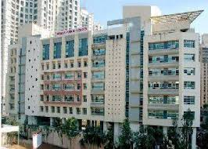
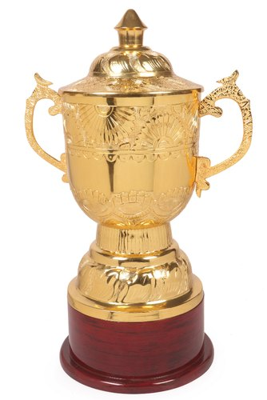

Pawar Public School, Bhandup
My school, My home.
Pawar Public School, Bhandup is one of the most brilliant schools in Mumbai. With more than 7000 number of pupils, Pawar Public School has a lot of branches but the biggest is the Chandivali Branch. I am studying in this school from nursery and now I am in grade 6. It was found by Sharad Pawar, and eventually the school was named after him. The principals and the staff of this fanatastic school is awesome. It has a garden, a basketball court and a football and handball ground with a vast stilt are and basement which has the dance and music room. The classes are spacious and quite comfortable. It is in the top 100 school of India.

Won second Prize in Don Bosco Baskeball Competition
Won second Prize in Viva Baskeball Competition
Won first Prize in Kabbadi Jr.
Won first Prize in Interschool Handball Competition.
Won first Prize in Interschool Debate Competition
Won third prize in Interschool Elecution Competiton
Won second Prize in Shri Ma Bal Nikatan Cricket Competition.
Won second Prize in Viva Baskeball Competition